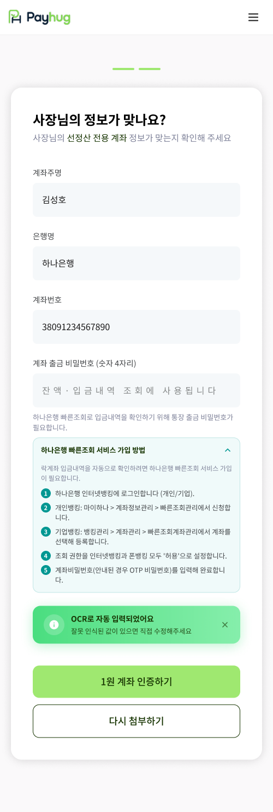

PART 2 · 가입에서 선정산 개시까지
17
빠른조회 서비스는 은행에서 직접 신청합니다
페이허그 앱에는 신청 버튼이 없습니다. 이 단계를 건너뛰면 다음으로 넘어가지 못합니다
1 페이허그 앱

앱에서는 안내만 보여드립니다
아래쪽 「하나은행 빠른조회 서비스 가입 방법」 줄을 눌러도 신청이 되는 게 아니라, 방법이 펼쳐질 뿐입니다.
›
2 하나은행 인터넷뱅킹 — 사장님이 직접

펼치면 이렇게 방법 다섯 단계가 나옵니다
이 다섯 줄을 사장님께 그대로 읽어드리면 됩니다. 개인사업자와 법인은 들어가는 메뉴가 다릅니다. 개인은 마이하나 › 계좌정보관리 › 빠른조회관리, 법인은 뱅킹관리 › 계좌관리 › 빠른조회계좌관리로 들어가서 락계좌를 골라 등록합니다.
인터넷뱅킹과 폰뱅킹, 둘 다 '허용'으로 켜야 합니다. 하나만 켜면 입금내역을 읽어오지 못합니다.
1
왜 이걸 해야 하나요
선정산 전용계좌(락계좌)에 매출이 들어온 걸 페이허그가 자동으로 확인하려면, 은행 쪽에서 조회 권한이 열려 있어야 합니다. 그 권한을 여는 게 빠른조회 서비스입니다.
2
신청은 페이허그가 대신 못 해 드립니다
사장님 명의로 하나은행 인터넷뱅킹에 로그인해서 직접 신청하셔야 합니다. 마지막에 계좌 비밀번호(안내를 받으셨다면 OTP 비밀번호)를 넣어야 완료되는데, 이 번호는 영업사원이 대신 입력하거나 받아 적지 마세요.
3
안 하면 여기서 멈춥니다
빠른조회가 켜지지 않으면 다음 단계인 입금계좌 등록으로 넘어갈 수 없습니다. 현장에서 가입이 끝나지 않는 가장 흔한 이유라, 방문 전에 미리 안내해 두시는 게 좋습니다.
왼쪽 화면의 「계좌 출금 비밀번호 네 자리」도 같은 이유로 받습니다. 화면에 적힌 대로 잔액과 입금내역을 조회할 때 쓰는 번호라, 빠른조회와 짝을 이룹니다.
가맹점 앱 · 선정산 전용계좌 등록 화면 원본
payhug